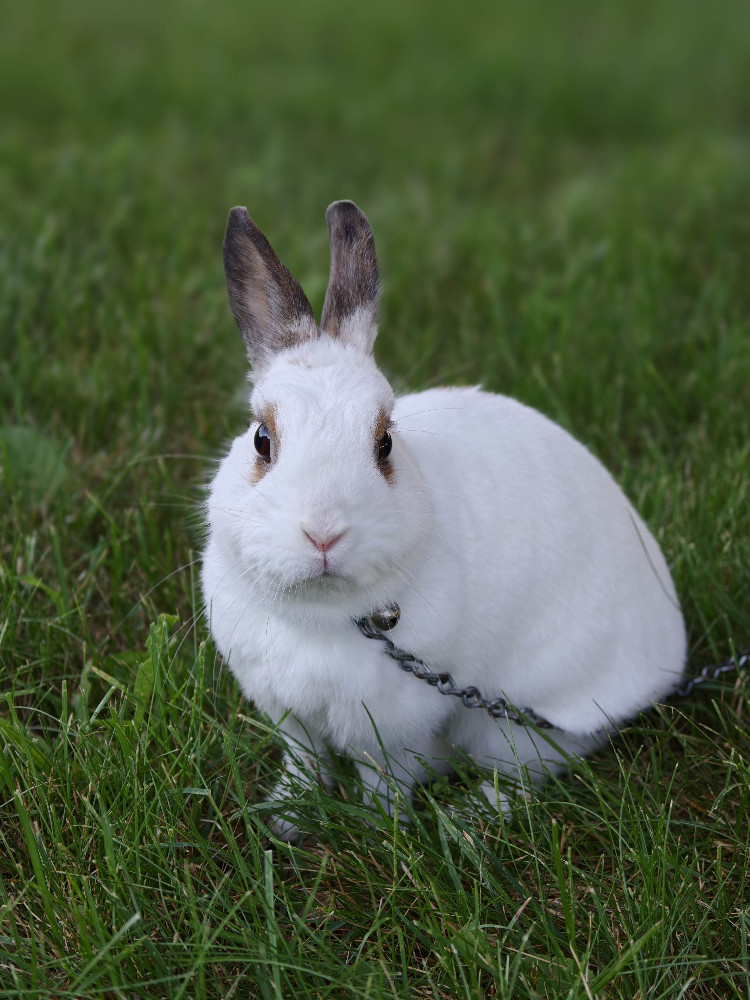

Class of 2028
I am an aspiring software engineer eager to create useful solutions to real problems.
Major: CS
Minor: ECE
I like to listen to music/go to concerts, play video games, and eat.
| Technology | Experience |
|---|---|
| HTML | Some (leaning No) experience |
| CSS | Some (leaning No) experience |
| JavaScript/TypeScript | A lot of experience |

Most recent post: AI Won't Take Your Job.